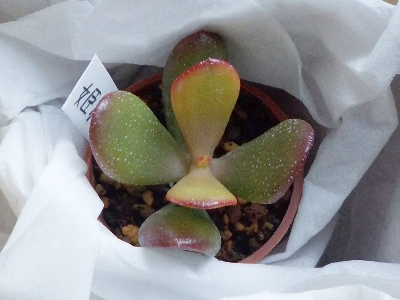
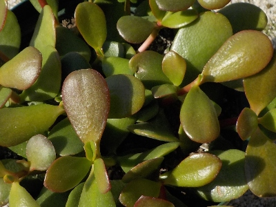
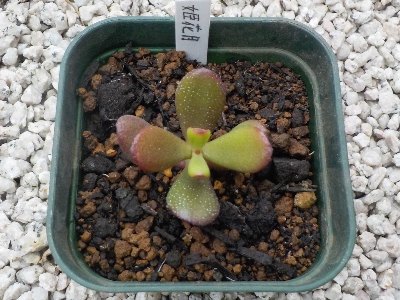
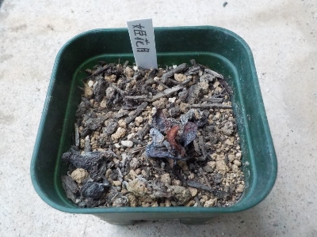

ちょっと色合いの違う金のなる木を育てることにしました。
更新日 : 2026/01/12

普通の金のなる木は家に何鉢もあるんですが、同じものばかりあってもつまらないのでちょっと違った品種を購入しました。
姫花月って名前の葉っぱが冬に赤くなるタイプです。150円だったので気軽に買えました。
まだ小さいですが、金のなる木なのですぐに大きくなるでしょう。
緑と赤が何個も並んでたら見栄えがよさそうですよね。
更新日 : 2026/01/12

普通の金のなる木は家に何鉢もあるんですが、同じものばかりあってもつまらないのでちょっと違った品種を購入しました。
姫花月って名前の葉っぱが冬に赤くなるタイプです。150円だったので気軽に買えました。
まだ小さいですが、金のなる木なのですぐに大きくなるでしょう。
緑と赤が何個も並んでたら見栄えがよさそうですよね。
更新日 : 2026/03/01

もう強い寒波は来ないだろうと思い、カネノナルキを軒下に置いたら紅葉しました。
紅葉したら姫花月と一緒だと思い比べてみたら、違ってました。姫花月は葉っぱの裏が赤かったです。普通のカネノナルキは葉っぱの裏は緑でした。
名前が違うだけあって、別のものですね。
更新日 : 2026/04/22

普通のカネノナルキみたいには大きくならないようですが、夏までにどれくらい大きくなるかな？
大きくすることより、枯らさないで育てる方が大事かもしれないです。
更新日 : 2026/09/19

なんか分からないけど枯れました。同じ環境のカネノナルキや別の多肉は大きくなってるけど、この姫花月だけ枯れました。
何か理由はあるはずだけど分からないな。分からないから再度育てるかは迷うな。
金のなる木はぷくぷくした木みたいですよね。小さくてキラキラした感じの花も好きです。